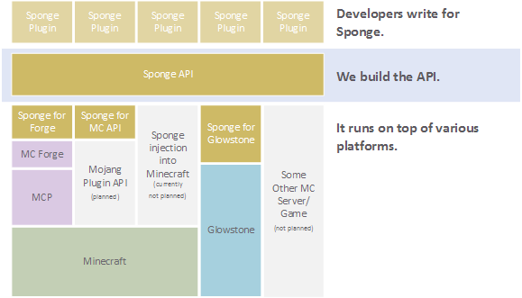
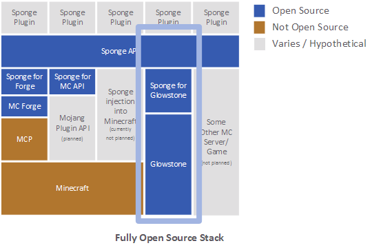
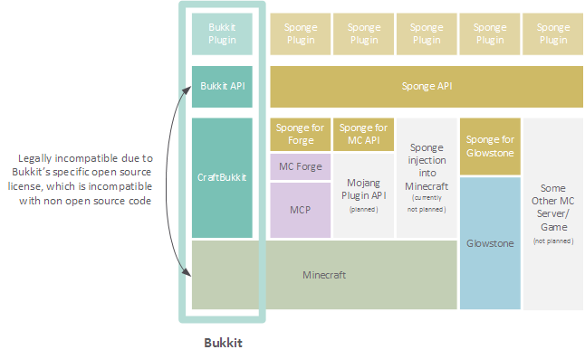

Frequently Asked Questions¶
Table of Contents
- What is Sponge?
- Summary
- For the User
- For Bukkit Plugin Developers
- For Forge Mod Developers
- Management of the Project
- From a Technical Perspective
- How Does It All Fit Together?
- What is Sponge Building?
- How Do We Keep Plugins/Mods From Breaking Between MC Versions?
- How Much is Open Source?
- How Did Bukkit Work?
- What About Forge Mods and hMod Plugins?
- General Questions
- When Will the First Downloads Be Available?
- Will There Be an Official Place to Download Plugins?
- What Does This Mean for the Players?
- What are Sponge Mods?
- What Does This Mean for the Server Owners?
- What Java Version is Sponge Using?
- Will Players Need the Forge Client to Connect?
- But Forge Doesn’t Support Unmodified Vanilla Clients?
- What Minecraft Version is Sponge be First Available for?
- But Forge Takes too Long to Update?
- I Haven’t Kept up, What Happened to Bukkit?
- Who is Involved With the Sponge Project?
- How Are Decisions Made?
- Have You Consulted the Community?
- Technical Questions
- Why Not Use a “Wrapper”-Styled API?
- Why Not Build a Standalone Server?
- Doesn’t That Mean That We Will End Up In This Same Situation Again If We Use Proprietary Code?
- Why Not Wait for the Official Minecraft API?
- What License Will Sponge Be Placed Under?
- Why Not use Bukkit’s API?
- Will the New API Be Like the Bukkit API in How It is Used? Events, etc.?
- Why SpoutAPI (+ Flow libs) Versus Canary or Other APIs?
- What About Plugins That Access ‘NMS’?
- Will the New Server Be Multi-threaded?
- How Will the New Server Perform in Comparison With Other Servers?
- Will You Be Able to Send Mods From the Server to the Client?
- Will Bukkit Plugins Be Supported, Without Modification?
- Will I Be Able To Keep My Server’s Worlds and Data?
- What About Support for Scala, Groovy, and Other JVM-based Languages?
- Will Other Programming Languages (Such as Lua) Be Supported?
- Will Glowstone be a Part of This?
- How Can I Help?
What is Sponge?¶
The purpose of the Sponge project is to provide a community-supported modding framework for Minecraft.
Summary¶
We want something easy to use.
Community-developed modding API. We invite any developer to help out.
Lots of people involved with strong Java backgrounds and/or experience.
An extremely open project.
Keeping performance as a high priority during development.
Bukkit plugins may run on Sponge without change due to efforts by the community.
Plan to eventually be used to make client mods.
Not tied to any platform:
- Can be used on a from-scratch server. (i.e. Glowstone)
- Planned and officially working with Glowstone team.
- Can be used on top of Forge.
- Planned and officially working with Forge team.
- No need for client mods if only Sponge is used on the server.
- Can work with Forge mods.
- Can be injected into Minecraft directly.
- Not planned yet. (This is a larger undertaking and we prefer something usable sooner.)
- Several third party implementations are attempting this.
- Can be used on a from-scratch server. (i.e. Glowstone)
For the User¶
Our ultimate goal is to create a modding API that is easy to use for owners of large servers, owners of small servers for friends and family, and everyone in between. In addition, we also plan to permit client modding.
Sponge plugins should work across several different Minecraft versions without needing an update from the developer, which means that you don’t have to worry about all your plugins breaking between each new major release of Minecraft. (1.6, 1.7, 1.8, etc.)
If Sponge is used on the server, players who join will not need Sponge or Forge installed on their game. You can use Sponge to make management of your server easier, by allowing you to deploy Sponge Plugins that protect areas, log what players do, add minigames, and so on.
- However, you will be able to use Sponge plugins on the client too, including ones that are meant only to be used on the client.
Sponge will be separated into an API that developers will use to make plugins and an implementation that is able to load these plugins. The API won’t change much between MC versions, so developers will build against that, and the implementation loads the plugins and makes them work.
- We want to start by writing an implementation for two platforms:
- Sponge will run on Minecraft Forge, which is an existing Minecraft modding framework (that lacks a cross-version API).
- Sponge will also run on Glowstone, which is an independent Minecraft server that was written from scratch. Later on, we may also explore other options.
- The reason why we have chosen Forge and Glowstone as our initial base is because they are well established projects, reducing our time to release, while making use of work that has already been done by the community.
- Sponge is not tied to any particular platform, be it Forge or Glowstone.
- When/if Mojang releases their own modding API, it will be possible to build the Sponge API on top of Mojang’s modding API so that your Sponge plugins continue to work.
- We want to start by writing an implementation for two platforms:
Sponge will support official interoperability with Forge so you can use both Sponge plugins and Forge mods together. We are working directly with the Forge team.
While Sponge will not be directly supporting Bukkit, community projects have been started that aim to provide complete support for existing Bukkit plugins on top of Sponge.
For Bukkit Plugin Developers¶
- Sponge should be as easy to develop in as with Bukkit.
- You will also be able to access the server internals (“net.minecraft.server” or “NMS” under CraftBukkit), however, this will be discouraged unless you are also writing a Forge mod. If you need something that the Sponge API does not provide, we plan to be open about accepting (well-written) implementations of well-requested features so that you don’t have to rely on hacky code.
- If/when the Mojang modding API comes out, we will build the Sponge API on top of Mojang’s API so your plugins/mods continue to work with minimal changes.
For Forge Mod Developers¶
- The purpose of Sponge is to make an API that doesn’t change much between MC versions. It will be possible to write mods that use both Forge and Sponge.
Management of the Project¶
- The project is currently led by three people: blood, sk89q and Zidane. We are making sure to be open with the team so that we do not end up “holding all the keys.” Sponge has a lot of help from the existing Minecraft community, but the project is led by these three people who make the final decisions. This way, we can have a large number of people contribute and yet still avoid having “too many cooks spoiling the broth.”
- We are trying to be open as possible. Our GitHub repository has been available since the first day development began and we make weekly, lengthy announcements detailing the progress and future of the project. Our developers and leads interact with the community around the Internet and on the Sponge forums. You will find that we are very approachable; if you have an idea or issue, we are all ears.
- We are using the MIT License, an extremely permissive open source license. This means that, should our server implementation encounter legal problems, it will be possible to reuse the Sponge API and start a new project without being further encumbered by legal issues.
From a Technical Perspective¶
- Many of our developers have worked with Minecraft for years and know the ins and outs of its mechanics.
- Our developers are well versed with Java. Many of us frequently work with “bytecode injection” and have for years, or even write mod loaders on the side.
- Performance is on our mind. The Glowstone implementation may run the best, but we plan to make the necessary changes to Minecraft to improve its performance for anything built on top of Minecraft itself (which includes the Forge implementation).
How Does It All Fit Together?¶
Note: As this is a simplification, the number of layers has no bearing on the performance of the actual implementation. When the game is actually run with the API, it collapses into two layers: plugins versus “modded Minecraft” / Glowstone.
How Much is Open Source?¶
Note: Glowstone is only a server and not the full game itself.
How Did Bukkit Work?¶
Note: CraftBukkit came as one download, even though there are multiple underlying parts. That will be the same case with Sponge, which will make it easy to run.
General Questions¶
When Will the First Downloads Be Available?¶
The release date of the Sponge implementation for Forge is still to be announced. However, the Sponge API (v1.0) was released on November 30th, 2014.
Will There Be an Official Place to Download Plugins?¶
Yes there will be. The plugin repository, to be called Ore, is in the works. The details are still being debated. You can take part in the discussion here https://forums.spongepowered.org/t/plugin-hosting/1150, or even assist its development on GitHub.
What Does This Mean for the Players?¶
Players should not notice anything different about the servers you know and love. Sponge is just an API that allows developers to create plugins.
What are Sponge Mods?¶
Sponge coremod is still under development, and will implement the Sponge API on a 1.8 Minecraft-Forge server. Future plans may include client-side Sponge mods that could perform a variety of functions related to the client, and running server plugins in single player mode.
What Does This Mean for the Server Owners?¶
Server owners will have to download Sponge and place it in the mods folder. The server can then be started like any other Forge server.
What Java Version is Sponge Using?¶
Sponge will be using Java 1.6, which is the minimum version supported by vanilla Minecraft and Forge.
Will Players Need the Forge Client to Connect?¶
No. If Sponge is used on the server, players who join will not need Sponge or Forge to connect, unless Forge mods are used on the server that must also be on the client.
But Forge Doesn’t Support Unmodified Vanilla Clients?¶
It does now. Forge’s lead developer LexManos has delivered on plans to add support for vanilla clients in the 1.8 update.
What Minecraft Version is Sponge be First Available for?¶
Sponge will be first available for Minecraft 1.8, or whichever 1.8.x version exists at the time.
But Forge Takes too Long to Update?¶
With a large portion of the Minecraft community working together, we are sure we can help speed things up. Development builds for Minecraft Forge are already available for the 1.8 update.
I Haven’t Kept up, What Happened to Bukkit?¶
The Bukkit project halted further development of their API and server modification. Later, one of the contributors to Bukkit sent a DMCA takedown notice to stop further distribution of CraftBukkit. He was within his legal rights. Downloads, as well as source code for CraftBukkit and its derivatives (Spigot, Cauldron) are no longer available.
Who is Involved With the Sponge Project?¶
- blood (of MCPC+/Cauldron) - project lead
- sk89q (of WorldEdit/WorldGuard) - project lead
- Zidane (of Spout/Obsidian) - project lead
- LexManos (of Forge/FML/MCP)
- Portions of the Spout team: Raphfrk, DDoS, Sleaker, Owexz, Wulfspider
- Portions of the Flow team: kitskub
- Portions of the ForgeEssentials team: AbrarSyed
- Some previous contributors to Bukkit
- Other Bukkit Plugin developers: KHobbits, Elgarl, zml
- Portions of the FTB team: progwml6
- Glowstone: SpaceManiac
- Other people we have likely failed to mention
However, we are interested in talking with anyone who is able to help.
How Are Decisions Made?¶
The project owners, blood, sk89q, and Zidane, after consulting with the community and other members when appropriate, will make the decisions.
Have You Consulted the Community?¶
Yes! While things have been moving along quickly, we’re still very open to input. Many of our decisions have been based on the initial discussion in the #nextstep IRC channel (on EsperNet) as well as the results of a survey. Sponge now has extensive IRC channels of its own, and helpful discussion is always welcome.
Technical Questions¶
Why Not Use a “Wrapper”-Styled API?¶
A wrapper that merely works on network packets and reuses command blocks is extremely limited in function, so plugins would only be able to do a fraction of what they are able to do now.
Why Not Build a Standalone Server?¶
Reusing existing efforts in the community will allow us to have a working version much quicker. Glowstone, unfortunately, is not free from the EULA as it was not written in a “clean-room” fashion (in the strictest sense of the term). Other implementations are less far along or they do not support Java, which appears to be a major point of contention for a lot of users and developers. None of us have the time to write a new server from scratch, and most of us have already seen Minecraft’s code in some form.
Doesn’t That Mean That We Will End Up In This Same Situation Again If We Use Proprietary Code?¶
It is to our knowledge and our understanding that Mojang does not wish to stop Minecraft modding, and the recent events have not been directly caused by them. Rather, a contributor (a major one) objected to the use of his code, licensed under GPL, in combination with proprietary code. If we avoid GPL, we will not have this problem. While this does not free us from Mojang’s control, it is to our belief that they support modding and will continue to do so.
Why Not Wait for the Official Minecraft API?¶
- We are not sure when it will come out.
- Many people are not in a position to wait.
- We can get started sooner.
- Those last three reasons may have said the same thing.
- As this new project is community-run, we may be able to push updates quicker than Mojang is able to, and react to the needs of the community better.
- The API may be implemented on other server implementations, and we encourage it.
What License Will Sponge Be Placed Under?¶
MIT, without a Contributor License Agreement. A Contributor License Agreement is not necessary and it may be a turn off to contributors. For more information, please read Sponge License.
Why Not use Bukkit’s API?¶
It contains GPL licensed code, which contributed to why we are in this situation. Recently, at least in the United States, the federal courts found that APIs could be copyrighted, although the case has not been fully resolved.
Will the New API Be Like the Bukkit API in How It is Used? Events, etc.?¶
Yes. It should be fairly similar, and still afford you more power because you will have access to Forge.
Why SpoutAPI (+ Flow libs) Versus Canary or Other APIs?¶
We chose SpoutAPI purely based on the result of the survey (which is mentioned previously). Note, however, we are not implementing SpoutAPI as-is. It will serve as inspiration, which will reduce the amount of time spent on API design. We will also use portions of flow’s libraries from http://github.com/flow.
What About Plugins That Access ‘NMS’?¶
You will instead be accessing interfaces through Forge, which has a much greater number of names de-obfuscated. However, accessing “NMS” raises the risk of your plugin breaking as is the case here, but that is your prerogative.
Will the New Server Be Multi-threaded?¶
It will be multi-threaded in the same fashion that Minecraft is, but we are not writing a server from scratch, so we are not able to make substantial changes.
How Will the New Server Perform in Comparison With Other Servers?¶
We are currently investigating this, but we plan to reach or exceed performance of other implementations, given time. The optimizations that were featured in Cauldron are also being evaluated.
Will You Be Able to Send Mods From the Server to the Client?¶
The general consensus is against this due to security concerns. Minecraft’s API does not plan to send mods (with executable code) to the client either.
Will Bukkit Plugins Be Supported, Without Modification?¶
No, not natively, however members of the community have begun work on a Sponge plugin named Pore that acts as a bridge between the two APIs.
For those unable to use it, we will be providing documentation and support for people looking to transition from Bukkit to Sponge entirely.
Will I Be Able To Keep My Server’s Worlds and Data?¶
Yes, at least for worlds. Plugin data may or may not carry over. The plan is to create a conversion process which will convert or import as much data as possible. Plugins will likely create their own conversion process allowing you to keep homes, warps and other data.
What About Support for Scala, Groovy, and Other JVM-based Languages?¶
We encourage other languages, but Java will be our main priority.
Will Other Programming Languages (Such as Lua) Be Supported?¶
We will encourage other implementations, but it will not be a high priority.
Will Glowstone be a Part of This?¶
We hope we can help SpaceManiac and the team implement the API. We also invite others to collaborate with us if they wish to.
How Can I Help?¶
We appreciate all offers of assistance. Please visit our volunteers portal:
We apologise to anyone who did not receive a reply to earlier rounds of applications. The number of sumbissions was overwhelming. Thank you all!